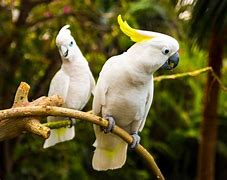
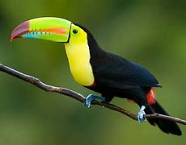
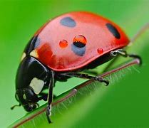
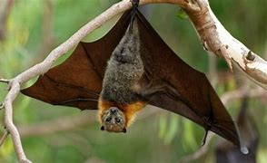

Seguro que en más de una ocasión has soñado que tenías la capacidad de volar, de surcar los cielos y poder contemplar el mundo desde las alturas y es que, volar, ha sido el sueño del ser humano desde tiempos inmemorables.En cuanto a medio aéreo, entendemos aquel que, se produce principalmente en el aire, por lo tanto, un ecosistema aéreo será aquel sistema formado por los organismos, factores físicos y químicos que interaccionan y se relacionan en este medio y complementado con elementos abióticos. Estos componentes bióticos y abióticos (fauna y flora, elementos no vivos) se reconocen por relacionarse a través de ciclos de nutrientes y flujos de energía. A continuación descubriremos este fascinante mundo de animales que allí habitan.
- ¿Que son los animales aéreos?
- Tipos de animales aéreos.
- Características.
- Diferencias entre animales planeadores y aéreos.
¿Que son los animales aéreos?.
Los animales aéreos son animales que tienen la suficiencia para volar gracias a sus propios medios. ienen una estructura corporal adaptada para desplazarse de manera aérea: esqueleto, peso, alas y plumas.
Tipos de animales aéreos
| Aves que son animales voladores | Insectos que pueden volar | Mamíferos que pueden volar |
|---|---|---|
| Son animales vertebrados que, poseen una estructura ósea generalmente más ligera de lo normal, característica que facilita su vuelo. Cuentan con cuatro extremidades, las dos inferiores son patas que les permiten desplazarse o bien mediante pequeños saltos o bien andando según su especie mientras que, sus extremidades superiores son alas. | Animales invertebrados, de modo que es un exoesqueleto el que recubre su cuerpo y da soporte a su organismo. Generalmente, los insectos voladores cuentan con antenas, alas y tres pares de patas, aunque no todos cumplen con esta descripción | El murciélago o quiróptero es el único mamífero que tiene la capacidad de volar. Al igual que el resto de mamíferos son animales vertebrados y de sangre caliente. |
|  |  |  |
Características.
- Alimentacion.
- Suelen alimentarse de semillas e insectos.
- poseen un pico por el cual pasan y digieren la comida en su estómago. El pico también es su arma para cazar y de defensa, sirve para hacer nidos, y en épocas de apareamiento sirve para seducir.
- Reproduccioón.
- Su reproducción en su mayoría es mediante huevos (reproducción ovípara) en el caso de las aves, pero también puede ser vivípara en el caso de los mamíferos como el murciélago, o los planeadores.
- Vuelo.
- Una de sus características principales es que pueden volar, usando sus alas. Sin embargo, hay algunos animales que poseen alas y no pueden volar.
- Las alas de las aves están cubiertas de plumas, mientras que la de los insectos están formadas por un material transparente y sedoso.
- El vuelo de los animales aéreos se produce por medio de impulsos en el aire con mayor velocidad hacia abajo.
- Hábitat
- Su hábitat no es necesariamente el aire, los animales aéreos también pueden vivir en la tierra o el mar, pero se desplazan por este medio.
- Tamaño
- En relación al tamaño, este varía según la especie. En el caso de los insectos pueden medir desde unos pocos mm hasta varios cm, mientras que en el caso de las aves, las hay que miden seis centímetros (colibríes), mientras que hay otras que alcanzan el metro de altura (águilas)